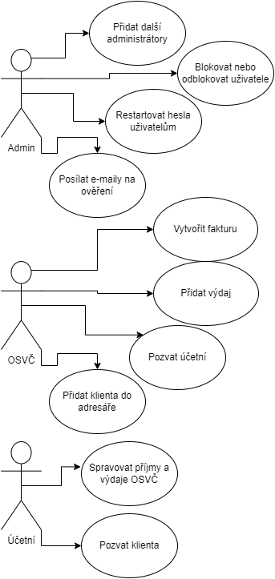

Fakturáček
- Autoři
- Radek Jůzl
xjuzlr00@stud.fit.vutbr.cz
Popis činosti v týmu:
- Profily uživatelů, změna hesla, úprava profilu, nahrání avatarů
- Sekce pro účetní, editace textů
- Výdaje, ARES kontrola IČ
- Martin Kovalski
xkoval19@stud.fit.vutbr.cz
Popis činosti v týmu:
- Administrátorská sekce
- Veřejná část projektu
- Sekce pro OSVČ, fakturace, QR kódy
- Dalibor Kyjovský
xkyjov03@stud.fit.vutbr.cz
Popis činosti v týmu:
- Výdaje, kategorie
- Statistiky
- URL aplikace
- https://www.fakturacek.pixla.rekode.cz
Uživatelé systymu pro testování
| Login | Heslo | Role |
|---|
| admin@fakturacek.pixla.rekode.cz | qwertzuI9@ | Administrátor |
| osvc@fakturacek.pixla.rekode.cz | qwertzuI9@ | OSVČ |
| ucetni@fakturacek.pixla.rekode.cz | qwertzuI9@ | Účetní |
Případ užití

Implementace
Administrátor
- Přidat další administrátory: AdministratorsPresenter.php, AdministratorsManager.php, AdministratorsFormFactory.php
- Blokovat nebo odblokovat uživatele, restartovat hesla uživatelům, posílat e-maily na ověření: UsersPresenter.php, UserManager.php
OSVČ
- Vytvořit fakturu: InvoicingPresenter.php, InvoicingManager.php, InvoicingFormFactory.php
- Přidat výdaj: ExpensesPresenter.php, ExpensesManager.php, ExpensesFormFactory.php
- Pozvat účetní: AccountantPresenter.php, ClientsAccountantFormFactory.php
- Přidat klienta do adresáře: ClientsPresenter.php, ClientsFormFactory.php, ClientsManager.php
Účetní
- Spravovat příjmy a výdaje OSVČ: ClientsPresenter.php
- Pozvat klienta: ClientsPresenter.php, ClientsAccountantFormFactory.php
Databáze

Popis instalace
- Požadavky: PHP 7.4, MYSQL databáze, GD extension, mbstring extension
- Postup instalace: Rozbalit archiv do složky na server. V dané složce spustit nástroj composer příkazem composer update, který nainstaluje všechny potřebné závislosti. Dále je potřeba povolit webovému serveru zápis do složek temp/cache a log.
- Databáze: V archivu je umístěn soubor s dumpem databáze (fakturacek.sql). Je potřeba ale nejdříve databázi s názvem "fakturacek" vytvořit.
- Konfigurace: Do souboru config/local.neon je potřeba zadat přihlašovací údaje k databázi.
Známé problémy
Lze založit další účty pomocí registrace, ale je potřeba potvrdit jejich e-mail. Toto potvrzení (včetně dalších e-mailů, které aplikace umí posílat) chodí pouze na soukromé e-maily od Googlu (Gmail) a případně e-maily od Microsoftu. Je možné, že ten e-mail přijde do spamu/nevyžádané pošty. Je to způsobené chybou serveru, nikoliv aplikací.